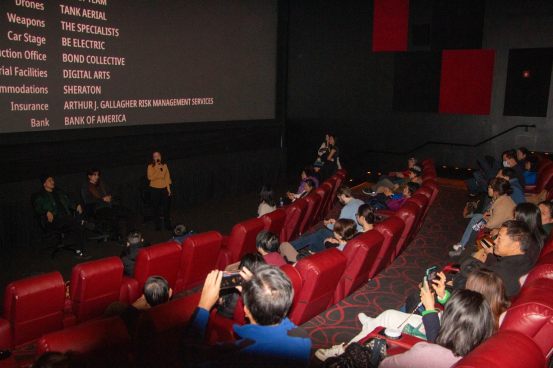
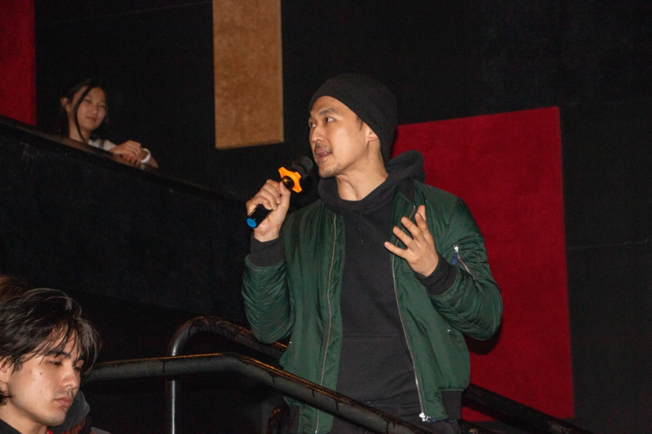

When the premiere ended and the lights came back on, there was an unusual quiet in the room. Not the
“movie’s over, time to go” kind of quiet—more like people staying in their seats, still processing.
Rosemead isn’t an easy film to walk away from.
And after that silence came something longer: conversation, reflection, and response. The Boston
premiere and post-screening discussion—supported by UCACF—concluded successfully in a warm, candid
exchange.

Where is the point of no return?
1) Tragedy isn’t sudden: it’s built through missed moments and overlooked signals
During the discussion, actor Anzi DeBenedetto (Stan) shared that his first reaction after reading the
script was: this is not a story where “something suddenly happens in one moment.” Instead, the teenage
protagonist Joe seems to be “almost pulled back” at multiple turning points—if someone had noticed
earlier, stepped in more decisively, or avoided less, the outcome might have been different.
But reality often doesn’t work that way. Missed chances, delayed responses, and small warning signs that
go unaddressed can accumulate—until a chain reaction becomes difficult to reverse.
That’s why tragedy is rarely one single explosion point. It’s often a string of signals that were
overlooked. The film raises a hard question: where is the point at which help arrives too late?
We instinctively want to ask: whose fault was it? Which step went wrong? If we had done things
differently, could it have been avoided?
Yet Rosemead refuses to collapse the answer into one person or one mistake. It points to something
harder: many families are not lacking love—they are lacking the ability to recognize the signs, the
language to communicate, access to resources, and a clear, workable path to help and a support network.
For many viewers, this became the deepest resonance: if someone could have been seen and understood
earlier, many stories might have unfolded differently.
2) The limits of professional systems: why “doctors can’t do more”
Actor James Chen (Dr. Shu) offered an important perspective. Many viewers ask: “Why can’t the therapist
be more direct? Why not intervene faster or more forcefully?”
But in real life, professional systems operate with strict ethical and legal boundaries—privacy rules
and consent mechanisms, in particular. When the patient is a minor, treatment often depends on the
guardian’s trust and cooperation. Not everything that feels “necessary” is immediately “permitted.”
We sometimes place all our hope on a single professional, expecting a heroic solution. But mental health
is never a one-point rescue—it requires long-term coordination. Family, school, healthcare, and
community: hesitation, disconnection, or misunderstanding in any part can slow everything down and make
help harder to reach.

3) Secrecy and shame: the silent inertia shaped by immigrant experience
Another recurring theme that night was Secrecy and Shame.
Hearing those words, I thought of familiar scenes: someone at home feels unwell but insists they’re
fine; someone is suffering but doesn’t want others to know; someone avoids seeing a doctor because it
might “sound bad” if it gets out.
Often this isn’t stubbornness—it’s long-formed self-protection. In a society that doesn’t feel fully
“yours,” many families work harder, hold themselves to higher standards, and fear being seen as failing.
Vulnerability becomes risk; asking for help feels like exposure; admitting difficulty feels like losing.
But mental health problems do not disappear in silence. As James emphasized, serious mental illness does
not simply resolve on its own—burying it often allows it to grow deeper. We need to treat mental health
with the same normalcy as physical health: if your arm is broken, you see a doctor; if your mind is
struggling, it deserves real care too.
4) From film to real life: the support pathways a therapist pointed to
At the end of the discussion, a Boston-based practicing therapist brought many people back to reality.
She spoke about challenges she sees often: parents’ distrust, doubts about whether therapy or medication
works, and the fact that under institutional and ethical boundaries, professionals may not be able to
initiate intervention or follow families as closely as people assume.
She said: “A person who is ill is not only a family’s responsibility; they are also part of the
community.”
When mental health is treated as a purely private matter, pressure collapses inward—becoming an
isolated, unsupported kind of “self-solving.” But it should not require a single family to carry
everything alone. What’s needed is workable public support: crisis assessment, consistent case
follow-up, transitional services, and training and support that helps people return to daily life and
work. Whether information is transparent, resources are reachable, and help is easy to access often
determines whether a family can make it through its hardest period.
5) From theater to community: how conversation can extend into support
Rosemead doesn’t offer a neat “solution.” What it offers is a public space—one where people from
different backgrounds can sit together and talk about topics that are rarely discussed openly: mental
health, shame, immigrant trauma, family responsibility, and the question of whether we can act earlier.
As one viewer put it: people willing to walk into the theater for this film may already be ahead of the
curve. The next step is bringing the conversation back to a wider community.

In this context, the “point of no return” isn’t a dramatic moment. It’s a threshold formed over
time—when warning signs are minimized, communication stalls, and help is delayed, while support pathways
remain unclear or hard to reach.
The value of Rosemead and the post-screening discussion is that it makes that threshold visible
earlier—encouraging earlier recognition, earlier speaking up, and earlier entry into support networks.
The film also resists single-cause explanations. Real-life crises often come from layered breakdowns:
limited family communication, ethical and consent boundaries within professional systems, and gaps in
the accessibility of community resources and information.
So the takeaway isn’t after-the-fact blame, but earlier recognition and connection—so intervention
happens before the threshold is crossed.
This is also why UCACF supported the premiere and discussion: to strengthen public conversation and
increase the visibility and accessibility of resources and pathways—because before that threshold, there
is still room to change the outcome.
The film ended, but the conversation should remain in the community.
If someone around you needs to be understood and seen, consider going to the theater—Rosemead is now
showing in many cities across the U.S. (you can check showtimes on AMC, Fandango, and other ticketing
platforms).